Платы расширения для Arduino
(Arduino Shields)
Одним из ключевых преимуществ платформы Arduino является популярность. Популярную платформу активно поддерживают производители электронных устройств, выпускающие специальные версии различных плат, расширяющих базовую функциональность контроллера. Такие платы, называемые платами расширения (Arduino Shield, шилд), служат для выполнения самых разнообразных задач и могут существенно упростить проектирование новых устройств.
- Подключение Arduino Shields
- Программирование Arduino Shield
- Arduino Sensor Shield
- Arduino Motor Shield
- Arduino Ethernet Shield
- Платы расширения для прототипирования
- Arduino LCD shield и TFT shield
- Arduino Data Logger Shield
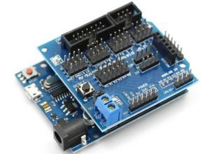
Рис. 1 - Arduino с установленной платой расширения
Плата расширения Arduino — это законченное устройство, предназначенное для выполнения определенных функций и подключаемое к основному контроллеру с помощью стандартных разъемов. На плате расширения установлены все необходимые электронные компоненты, а взаимодействие с микроконтроллером и другими элементами основной платы происходят через стандартные пины Arduino. Чаще всего питание на шилд тоже подается с основной платы Arduino, хотя во многих случаях есть возможность запитки с других источников. В любом шилде остаются несколько свободных пинов, которые вы можете использовать по своему усмотрению, подключив к ним любые другие компоненты.
Англоязычное слово Shield переводится как щит, экран, ширма. В нашем контексте его следует понимать как нечто, покрывающее плату контроллера, создающего дополнительный слой устройства, ширму, за которой скрываются различные элементы.
Плата расширения Arduino нужны для того, чтобы:
- экономиnm время,
- кто-то смог заработать на этом.
Зачем тратить время, проектируя, размещая, припаивая и отлаживая то, что можно взять уже в собранном варианте, сразу начав использовать? Хорошо продуманные и собранные на качественном оборудовании платы расширения, как правило, более надежны и занимают меньше места в конечном устройстве. Это не значит, что нужно полностью отказываться от самостоятельной сборки и не нужно разбираться в принципе действия тех или иных элементов. Ведь настоящий инженер всегда старается понять, как работает то, что он использует. Но мы сможем делать более сложные устройства, если не будем каждый раз изобретать велосипед, а сосредоточим свое внимание на том, что до нас еще мало кто решал.
Естественно, за возможности приходится платить. Практически всегда стоимость конечного шилда будет выше цены отдельных комплектующих, всегда можно сделать аналогичный вариант подешевле. Стоимость плат постоянно снижается, поэтому чаще всего выбор делается в пользу использования готовых устройств.
Наиболее популярным примерами шилдов являются платы расширения для работы с датчиками, двигателями, LCD-экранами, SD-картами, сетевые и GPS-шилды, шилды со встроенными реле для подключения к нагрузке.
Подключение Arduino Shields
Для подключения шилда нужно просто аккуратно «надеть» его на основную плату. Обычно контакты шилда типа гребенки (папа) легко вставляются в разъемы платы Arduino. В некоторых случаях требуется аккуратно подправить штырки, если сама плата спаяна неаккуратно. Тут главное действовать аккуратно и не прилагаться излишней силы.
Как правило, шилд предназначен для вполне конкретной версии контроллера, хотя, например, многие шилды для Arduino Uno вполне нормально работают с платами Arduino Mega. Распиновка контактов на Arduino Mega выполнена так, что первые 14 цифровых контактов и контакты с противоположной стороны платы совпадают с расположением контактов на UNO, поэтому в нее легко становится шилд от Arduino.
Программирование Arduino Shield
Программирование схемы с платой расширения не отличается от обычного программирования Arduino, ведь с точки зрения контроллера мы просто подключили наши устрйоства к его обычным пинам. В скетче нужно указывать те пины, которые соединены в шилде с соответствующими контактами на плате. Как правило, производитель указывает соответствие пинов на самом шилде или в отдельной инструкции по подключению. Если вы скачаете скетчи, рекомендованные самим производителем платы, то даже это делать не понадобится.
Чтение или запись сигналов шилдов производится тоже обычным методом: с помощью функций analogRead (), digitalRead (), digitalWrite () и других, привычных любому ардуинщику команд. В некоторых случаях возможны коллизии, когда вы привыкли к одной схеме соединения, а производитель выбрал другую (например, вы подтягивали кнопку к земле, а на шилде – к питанию). Тут нужно быть просто внимательным.
Arduino Sensor Shield
Как правило, эта плата расширения идет в наборах Arduino и поэтому именно с ней ардуинщики встречаются чаще всего. Шилд достаточно прост – его основная задача предоставить более удобные варианты подключения к плате Arduino. Это осуществляется за счет дополнительных разъемов питания и земли, выведенных на плату к каждому из аналоговых и цифровых пинов. Также на плате можно найти разъемы для подключения внешнего источника питания (для переключения нужно установить перемычки), светодиод и кнопка перезапуска.
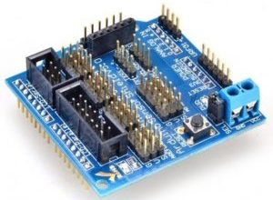
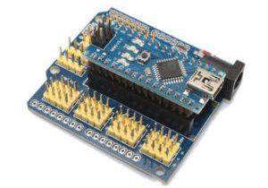
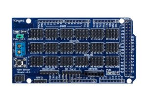
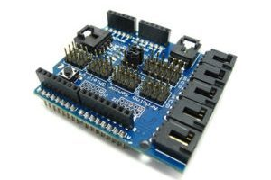
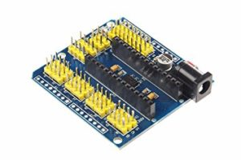
Рис. 2 - Варианты Arduino Sensor Shield
Существует несколько версий сенсорной платы расширения. Все они отличаются количеством и видом разъемов. Наиболее популярными сегодня являются версии Sensor Shield v4 и v5.
Arduino Motor Shield
Данный шилд Arduino очень важен в робототехнических проектах, т.к. позволяет подключать к плате Arduino сразу обычный и серво двигатели. Основная задача шилда – обеспечить управление устройствами потребляющими достаточно высокий для обычной платы Arduino ток. Дополнительным возможностями платы является функция управления мощностью мотора (с помощью ШИМ) и изменения направления вращения. Существует множество разновидностей плат motor shield. Общим для всех них является наличие в схеме мощного транзистора, через который подключается внешняя нагрузка, теплоотводящих элементов (как правило, радиатора), схемы для подключения внешнего питания, разъемов для подключения двигателей и пины для подключения к Arduino.
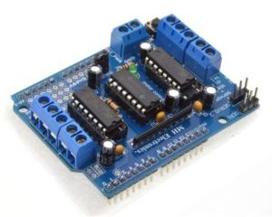
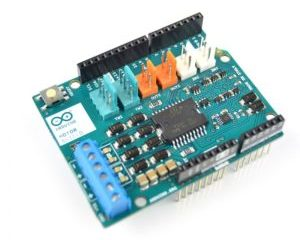
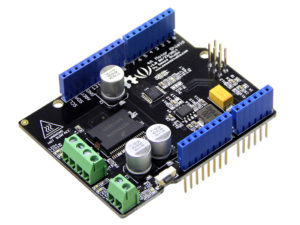
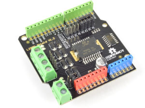
Рис. 3 - Варианты Arduino Motor Shield
Arduino Ethernet Shield
Организация работы с сетью — одна из самых важных задач в современных проектах. Для подключения к локальной сети через Ethernet существует соответствующая плата расширения.
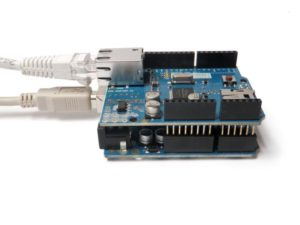
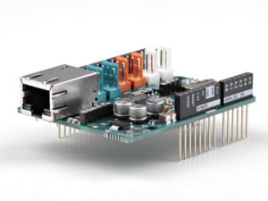
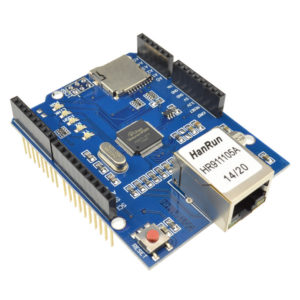
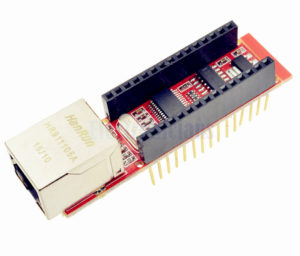
Рис. 4 - Варианты Arduino Ethernet Shield
Платы расширения для прототипирования
Эти платы достаточно просты — на них расположены контактные площадки для монтажа элементов, выведена кнопка сброса и есть возможность подключения внешнего питания. Предназначение данных шилдов — повысить компактность устройства, когда все необходимые компоненты располагаются сразу над основной платой.
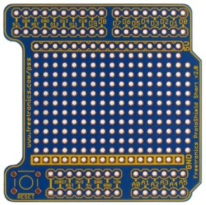
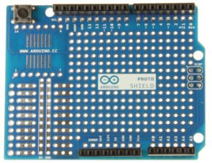
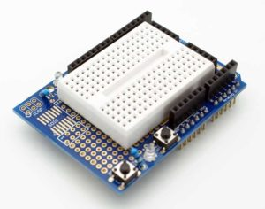
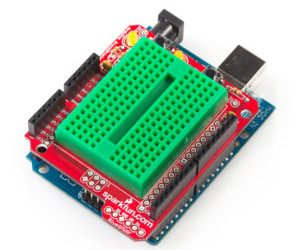
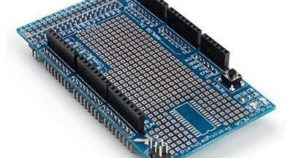
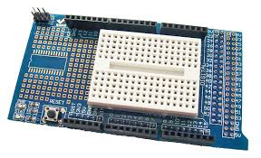
Рис. 5 - Варианты плат расширения для прототипирования
Arduino LCD shield и TFT shield
Данный тип шилдов используется для работы с LCD-экранами в Arduino. Как известно, подключение даже самого простого 2-строчного текстового экрана далеко не тривиальная задача: требуется правильно подключить сразу 6 контактов экрана, не считая питания. Гораздо проще вставить готовый модуль в плату Arduino и просто загрузить соответствующий скетч. В популярном LCD Keypad Shield на плату сразу заведены от 4 до 8 кнопок, что позволяет срзау организовать и внешний интерфейс для пользователя устройства.
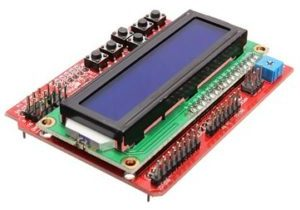
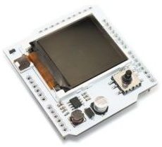
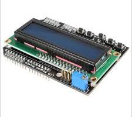
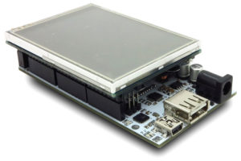
Рис. 6 - Варианты плат расширения LCD shield и TFT shield
Модуль регистрации и хранения данных
(Arduino Data Logger Shield)
Модуль регистрации и хранения данных позволяет сохранять на SD карте результаты измерений дополнительно монтируемых датчиков. Модуль регистрации и хранения данных содержит микросхему часов реального времени, позволяющую фиксировать дату и время каждого измерения. На плате смонтирован держатель SD карты, контейнер для батареи питания. Батарея обеспечивает ход часов в течение нескольких лет. Макетное поле предназначено для монтажа датчиков и электрических цепей. Программное обеспечение Arduino, предоставляемое с сайта Adafruit, позволяет сохранять файлы данных на карте памяти в формате пригодном для программы Excel. Производится фирмой Adafruit.
Устройство дает возможность исследовать параметры различных процессов, развивающихся на протяжении длительного времени. Например, можно узнать какова температура в нескольких точках блока питания, работающего с максимальной гарантированной нагрузкой в течение недели и проверить эффективность средств охлаждения. Полученные данные представляются в виде файла стандартного формата, который можно на персональном компьютере преобразовать в график средствами Microsoft Office.
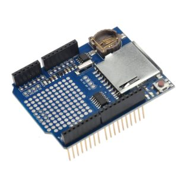
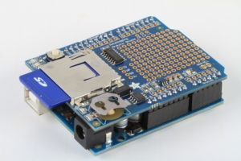
Рис. 7 - Платы модуля регистрации и хранения данных
Источники
arduinomaster.ru - Arduino Shields — платы расширения для ардуино
arduino-kit.ru - Модуль регистрации и хранения данных (плата дата логгера для Arduino)